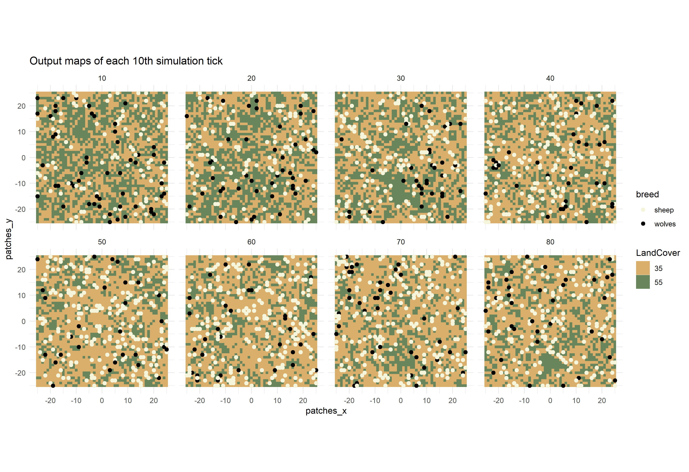

Spatial Output
Jan Salecker
2019-01-15
Source:vignettes/articles/spatial-output.Rmd
spatial-output.RmdGathering spatial output from NetLogo model simulations
nlrx is able to gather spatial output from your NetLogo simulations. The experiment class object provides two slots for measuring turtles and patches. The metrics.turtles slot accepts any vector of strings containing valid turtles-own variables of your NetLogo model. The metrics.patches slot accepts any vector of strings containing valid patches-own variables of your NetLogo model. The metrics.links slot accepts any vector of strings containing valid links-own variables of your NetLogo model.
Basically, you can enter any variable of your model that is listed in turtles-own, patches-own or links-own, however if you add variables that contain strings, these strings must not contain any whitespaces or the output data will not be parsed correctly.
For instance, we might want to measure coordinates, who numbers and the breed of turtles, and coordinates of patches and the corresponding pcolor on each tick. We can then define our experiment and run the simulations:
library(nlrx)
library(ggplot2)
library(gganimate) # devtools::install_github('thomasp85/gganimate') - if you have troubles installing gganimate, you most likely also need to install gifski as system dependency
# Windows default NetLogo installation path (adjust to your needs!):
netlogopath <- file.path("C:/Program Files/NetLogo 6.0.3")
modelpath <- file.path(netlogopath, "app/models/Sample Models/Biology/Wolf Sheep Predation.nlogo")
outpath <- file.path("C:/out")
# Unix default NetLogo installation path (adjust to your needs!):
netlogopath <- file.path("/home/NetLogo 6.0.3")
modelpath <- file.path(netlogopath, "app/models/Sample Models/Biology/Wolf Sheep Predation.nlogo")
outpath <- file.path("/home/out")
# Define nl object
nl <- nl(nlversion = "6.0.3",
nlpath = netlogopath,
modelpath = modelpath,
jvmmem = 1024)
# Define experiment
nl@experiment <- experiment(expname = "nlrx_spatial",
outpath = outpath,
repetition = 1,
tickmetrics = "true",
idsetup = "setup",
idgo = "go",
idfinal = NA_character_,
idrunnum = NA_character_,
runtime = 100,
evalticks = seq(1,100),
metrics = c("count sheep","count wolves"),
metrics.turtles = c("who", "pxcor", "pycor", "breed"),
metrics.patches = c("pxcor", "pycor", "pcolor"),
constants = list("model-version" = "\"sheep-wolves-grass\"",
'initial-number-sheep' = 100,
'initial-number-wolves' = 50,
"grass-regrowth-time" = 30,
"sheep-gain-from-food" = 4,
"wolf-gain-from-food" = 20,
"sheep-reproduce" = 4,
"wolf-reproduce" = 5,
"show-energy?" = "false")
)
# Attach simdesign simple using only constants
nl@simdesign <- simdesign_simple(nl=nl,
nseeds=1)
# Run simulations and store output in results
results <- run_nl_all(nl = nl)This experiment will run for 100 ticks (runtime) and collects all metrics, metrics.turtles and metrics.patches on each tick (evalticks). Thus, executing run_nl_all() will report a tibble containing all metrics, metrics.turtles and metrics.patches. However, because the spatial metrics contain more than one value, these datasets are stored as lists inside the output tibble. These lists already contain all measured agent metrics and can for example be used to analyze distributions of these variables for specific agent groups.
In case of spatial data containing coordinates (pxcor/pycor for patches or pxcor/pycor and/or xcor/ycor for turtles), nlrx provides a function to transform the measured output into spatial objects. In order to use the function get_nl_spatial() the simulation output results tibble needs to be attached to the nl object first. The simdesign class within the nl object provides a slot for attaching output results (simoutput). An output results tibble can be attached to this slot by using the simdesign setter function setsim(nl, "simoutput").
# Attach results to nl object:
setsim(nl, "simoutput") <- results
# Report spatial data:
results_spatial <- get_nl_spatial(nl,
turtles = TRUE,
patches = TRUE,
turtle_coords = "px",
format="spatial")The get_nl_spatial() function uses 4 function parameters:
- turtles - TRUE/FALSE, if true the function will transform the measured metrics.turtles to spatial sf objects.
- patches - TRUE/FALSE, if true the function will transform the measured metrics.patches to spatial raster objects. In case there are several patches variables besides the coordinates, the result will be a rasterstack containing one raster for each patch variable
- turtle_coords - “px”/“x”, because turtle coordinates can be measured as pxcor/pycor or xcor/ycor this string defines which coordinates are used for creating the turtle sf objects. For instance, you can measure both coordinate pairs by entering them into metrics.turtles, and then decide for one type of coordinates to create spatial objects.
- format - “spatial”/“tibble”, the “spatial” option will report the generated output as tibble containing the spatial objects (raster/rasterStack, sf). You can also choose format “tibble” to report the spatial objects as a long format tibble, that can be used for plotting landscapes and turtles with ggplot2.
Visualization examples
The spatial tibble output from get_nl_spatial() can for example be used to plot maps for different ticks of the model simulation. Here is an example to create a facet plot using spatial simulation data of every 10th simulation tick:
# Report spatial data as tibble:
results_spatial_tibble <- get_nl_spatial(nl,
turtles = TRUE,
patches = TRUE,
turtle_coords = "px",
format="tibble")
# Split tibble into turtles and patches tibbles and select each 10th step:
results_spatial_tibble_turtles <- results_spatial_tibble %>%
dplyr::filter(group=="turtles") %>%
dplyr::filter(step %in% seq(0,80,10))
results_spatial_tibble_patches <- results_spatial_tibble %>%
dplyr::filter(group=="patches") %>%
dplyr::filter(step %in% seq(0,80,10))
# Create facet plot:
ggplot() +
facet_wrap(~step, ncol=4) +
coord_equal() +
geom_tile(data=results_spatial_tibble_patches, aes(x=patches_x, y=patches_y, fill=factor(pcolor))) +
geom_point(data=results_spatial_tibble_turtles, aes(x = pxcor, y = pycor, color = breed), size=1) +
scale_fill_manual(breaks=c("35", "55"), values = c("35" = "#D9AF6B", "55" = "#68855C")) +
scale_color_manual(breaks=c("sheep", "wolves"), values = c("sheep" = "beige", "wolves" = "black")) +
guides(fill=guide_legend(title="LandCover")) +
theme_minimal() +
ggtitle("Output maps of each 10th simulation tick")
Using the gganimate package(https://github.com/thomasp85/gganimate), it is even possible to generate animated plots from this spatial data tibble. Here is an example for a plot that has been generated by running the above experiment and postprocessing the data with get_nl_spatial().
# Report spatial data as tibble:
results_spatial_tibble <- get_nl_spatial(nl,
turtles = TRUE,
patches = TRUE,
turtle_coords = "px",
format="tibble")
# Split tibble into turtles and patches tibbles:
results_spatial_tibble_turtles <- results_spatial_tibble %>%
dplyr::filter(group=="turtles")
results_spatial_tibble_patches <- results_spatial_tibble %>%
dplyr::filter(group=="patches")
# Create an animated plot, using the step column as animation variable
p1 <- ggplot() +
geom_tile(data=results_spatial_tibble_patches, aes(x=patches_x, y=patches_y, fill=factor(pcolor))) +
geom_point(data=results_spatial_tibble_turtles, aes(x = pxcor, y = pycor, group=who, color = breed), size=2) +
scale_fill_manual(breaks=c("35", "55"), values = c("35" = "#D9AF6B", "55" = "#68855C")) +
scale_color_manual(breaks=c("sheep", "wolves"), values = c("sheep" = "beige", "wolves" = "black")) +
guides(fill=guide_legend(title="LandCover")) +
transition_time(step) +
coord_equal() +
labs(title = 'Step: {frame_time}') +
theme_void()
# Animate the plot and use 1 frame for each step of the model simulations
gganimate::animate(p1, nframes = max(results_spatial_tibble$step), width=400, height=400, fps=4)
anim_save("wolfsheep_world.gif")